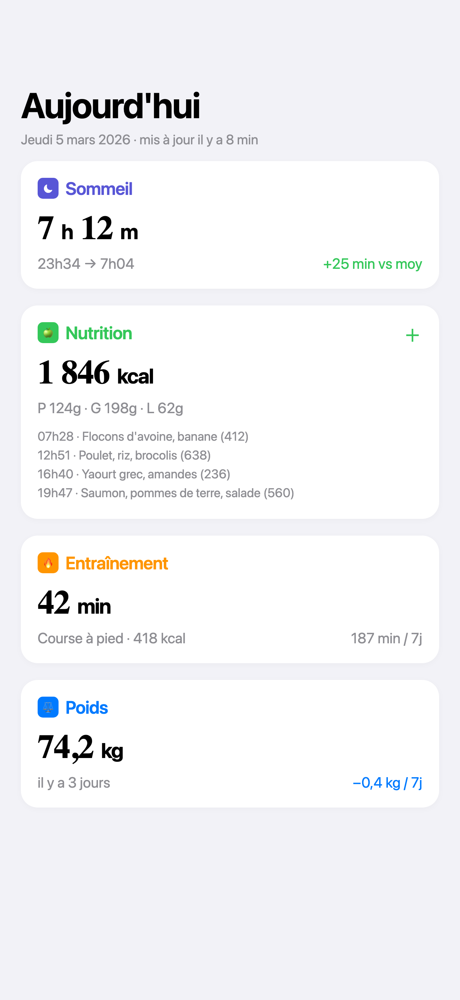
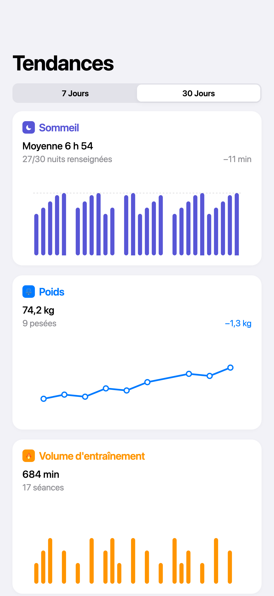
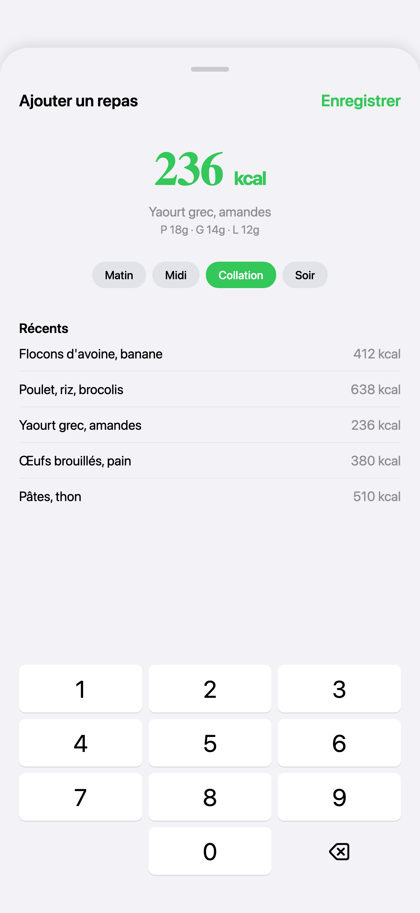

Sommeil, sport et alimentation : une seule app.
Livaside réunit ce que vous suivez aujourd'hui dans trois apps différentes. Connectée à Apple Health, avec des graphiques lisibles. La santé à vos côtés, pas devant vous.
Pourquoi on la construit
Suivre son sommeil, son sport et ses repas demande aujourd'hui trois ou quatre apps, des saisies à la main et une discipline que peu de gens tiennent. Au bout de quelques semaines, on arrête — et les données accumulées ne servent plus à rien.
Livaside part de l'inverse : le moins de temps possible demandé, une seule vue d'ensemble.
Ce qu'elle réunit
-
Le suivi, sans la corvée
Sommeil, séances et poids arrivent depuis Apple Health automatiquement. Les repas se saisissent à la main, rapidement.
-
Des graphiques qui se lisent
Vos tendances sur la durée : l'évolution de vos nuits, de vos séances, de votre poids. De quoi voir où vous en êtes en quelques secondes, sans décoder un tableau de bord.
-
Vos données, ouvertes à votre assistant
Vous pourrez donner à l'IA que vous utilisez déjà l'accès à vos données, pour lui poser vos questions directement. Détails juste en dessous.
À quoi ça ressemble
Trois écrans, et c'est toute l'app.
-

Aujourd'hui Votre nuit, vos séances, votre poids et vos repas du jour. Sur un écran. -

Tendances Sur 7 ou 30 jours. Les jours sans donnée restent vides : ils ne sont jamais comptés comme des zéros. -

Ajouter un repas Le seul endroit où vous saisissez quelque chose. Les repas habituels se reprennent en un geste.
Captures de la version en construction : l'interface peut encore changer d'ici la sortie.
Vos données, accessibles à l'IA de votre choix
La plupart des apps santé ajoutent leur propre assistant, avec ses réponses toutes faites. Livaside fait l'inverse : elle rendra vos données lisibles par l'outil que vous avez déjà choisi — Claude, ChatGPT ou un autre. Vous l'interrogez comme vous en avez l'habitude, il va chercher dans vos données.
VousEst-ce que je dors mieux les semaines où je m'entraîne le matin ?
Votre assistantIl lit vos nuits et vos séances des trois derniers mois, et vous répond.
Livaside n'embarque pas d'assistant et ne donne aucun conseil : elle fournit les données, l'outil qui les lit est le vôtre. Techniquement, c'est un serveur MCP — un branchement standard que ces outils savent déjà utiliser. Vous décidez si vous l'activez, et vous pouvez le couper.
Où en est le développement
On préfère le dire franchement : l'app n'est pas encore sortie.
- en coursSuivi du sommeil, des séances et du poids depuis Apple Health
- en coursSaisie des repas et graphiques de tendances
- ensuiteL'accès pour votre assistant IA
- ensuiteExport de vos données
Pas de date annoncée tant qu'on n'en est pas sûrs. Vous recevrez un e-mail quand il y aura quelque chose à installer.
Vos données vous appartiennent
Pas de compte à créer. Pas de serveur : vos données de santé restent sur votre iPhone. Elles ne sont ni revendues, ni partagées — il n'y a personne à qui les envoyer.
Sur l'App Store, « collecter » veut dire transmettre des données hors de l'appareil. Aujourd'hui, Livaside n'en transmet aucune. C'est vérifiable : regardez la rubrique « Confidentialité de l'app » des apps de santé que vous utilisez, et comparez.
La seule donnée qu'on vous demande, c'est l'adresse e-mail de cette liste d'attente. Elle reste en dehors de l'app, et sert uniquement à vous prévenir.
Vous voulez suivre la suite ?
Laissez votre adresse. Un e-mail à la sortie, et c'est tout.